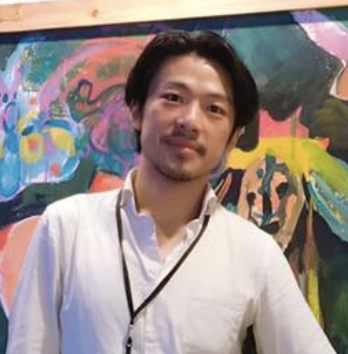

Team

Bao-Wen Chen
Co-founder
Bao-Wen, received his master degree from Graduate School of Urban Engineering, University of Tokyo. Upon graduation, he worked as a system engineer at Panasonic, Japan and design consultant of intelligent building in Taiwan. After moving back to Taiwan, he couldn't find ideal education for his kids so he created one.
Chiharu Hirai